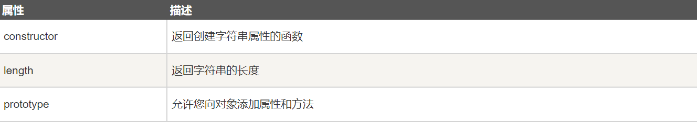
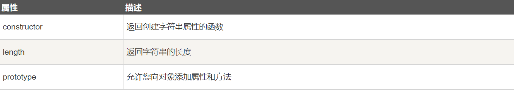

在 JavaScript 函数内部声明的变量（使用 var）是局部变量，所以只能在函数内部访问它。（该变量的作用域是局部的）。您可以在不同的函数中使用名称相同的局部变量，因为只有声明过该变量的函数才能识别出该变量。只要函数运行完毕，本地变量就会被删除
在函数外声明的变量是全局变量，网页上的所有脚本和函数都能访问它。
JavaScript 变量的生命期从它们被声明的时间开始。局部变量会在函数运行以后被删除。全局变量会在页面关闭后被删除。
HTML 事件是发生在 HTML 元素上的事情。当在 HTML 页面中使用 JavaScript 时， JavaScript 可以触发这些事件。
字符串可以存储一系列字符，如 "John Doe"。
字符串可以是插入到引号中的任何字符。你可以使用单引号或双引号。可以用索引值来获取字符串的每一个字符，可以使用字符串的内置属性来测量字符串长度sting.lenth
var txt = "ABCDEFGHIJKLMNOPQRSTUVWXYZ";
var sln = txt.length;
通常， JavaScript 字符串是原始值，可以使用字符创建： var firstName = "John"
但我们也可以使用 new 关键字将字符串定义为一个对象： var firstName = new String("John")
实例：
var x = "John";
var y = new String("John");
typeof x // 返回 String
typeof y // 返回 Object
不要创建 String 对象。它会拖慢执行速度，并可能产生其他副作用：
 
